How damming and nutrient enrichment alter food web structure along the river-sea continuum
INRAE, Rennes
INRAE, Rennes
Ifremer, Nantes
September 2, 2026
A connected but siloed continuum
- Rivers, estuaries and seas are connected
- flux of nutrients, migration of species
- Yet they are often studied in isolation (Kavanaugh et al. 2013)
- freshwater vs marine ecology, separate surveys, separate models
- Cannot seize the impacts of pressures across ecosystems
- Dams, nutrient enrichment
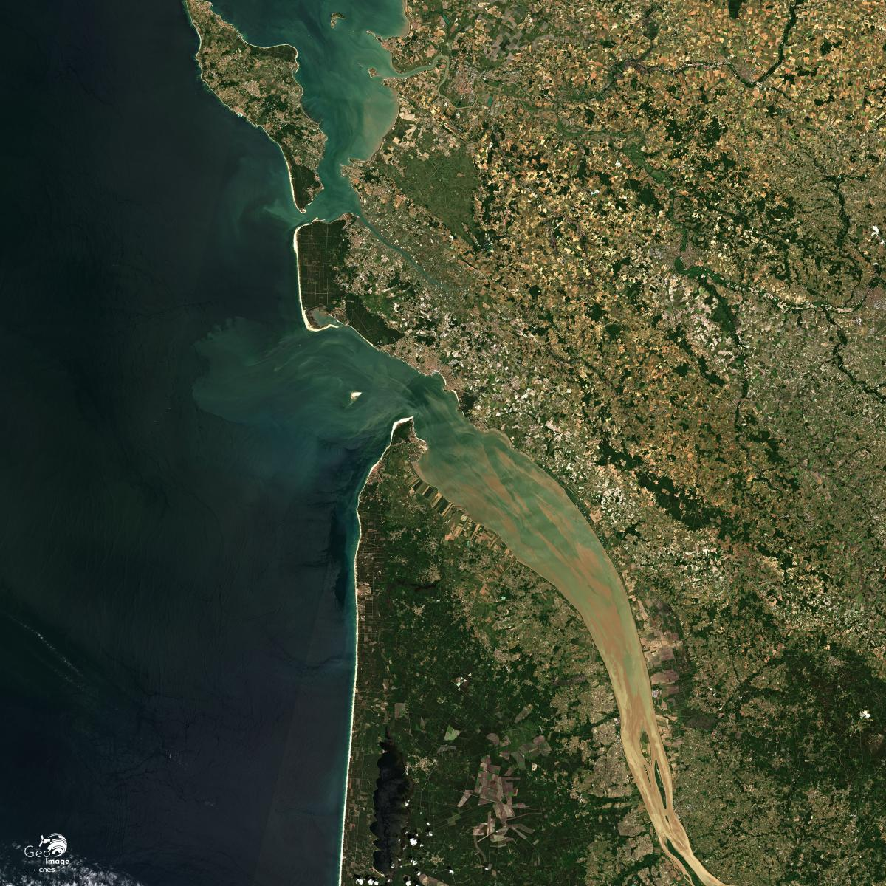
Garonne estuary – © CNES 2020Taking a meta-ecosystem perspective
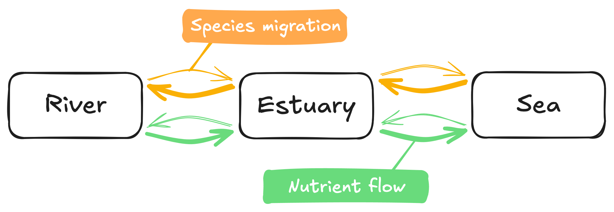
- Fluxes can be mostly directional: nutrients flow from river to the sea
- Contrasting habitat structure: dendritic river network vs. open sea
- Fluxes shape ecosystem: nutrient subsidies boost productivity
Loreau et al. (2003)
Stressors alter fluxes and so ecosystems
- Dams block migratory species and alter downstream flows (He et al. 2024)
- Argriculture and industry produce nutrient runoffs that enrich rivers, and downstream systems
- Both pressures impact local communities along the river-sea continuum
- Quantified by foodweb structure
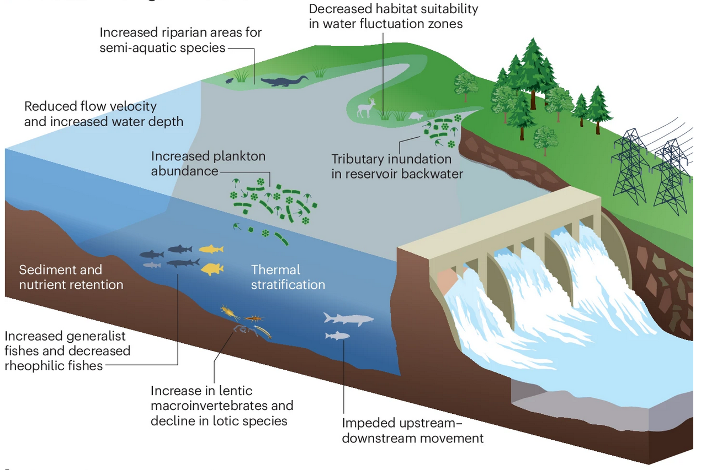
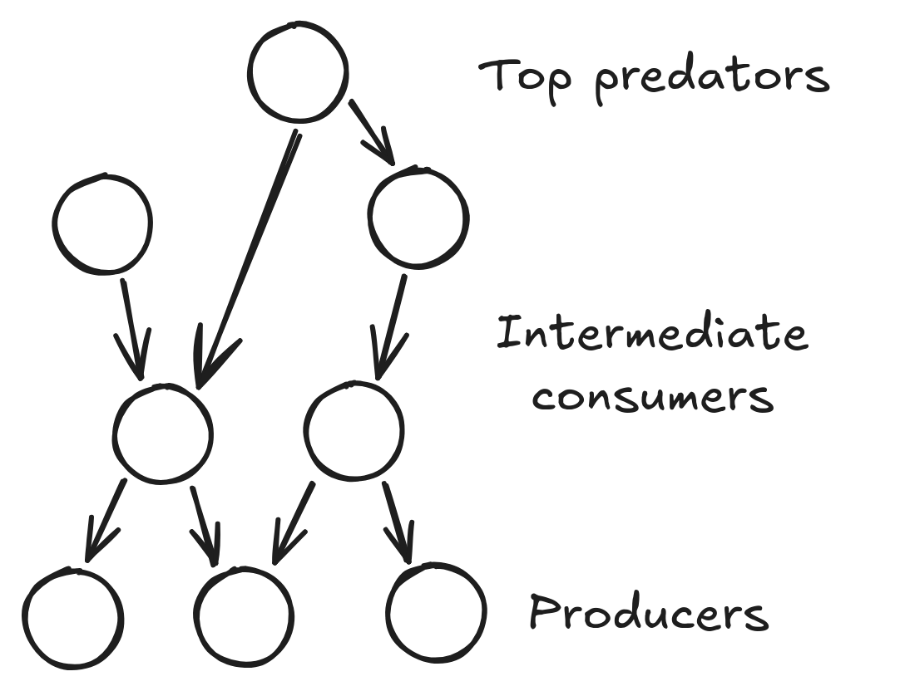
How do dams and nutrient enrichment alter food web structure along the river-sea continuum?
Hypotheses
- H1: Pressures act in part through direct and richness-mediated effects
- H2: Nutrients have a unimodal effect on food web structure
- H3: Downstream, dams simplify food webs downstream, their effects fades moving upstream
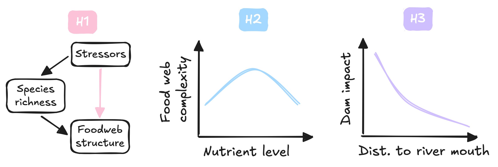
Methods – fish survey data
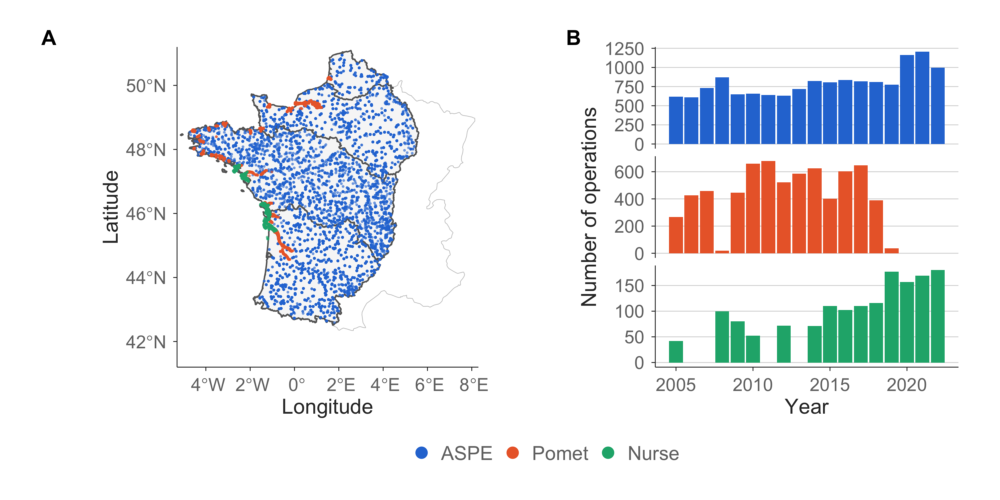
- 3 surveys harmonized
- ASPE (river, OFB), Pomet (estuary, INRAE), Nurse (sea, IFREMER)
- Species names, units and fish lengths standardized
- Missing sizes imputed per species from observed length distributions
Methods – reconstructing food webs
- Diet table for 158 species
rfishbase(Boettiger et al. 2012)- validation with literature
- Metaweb built from diet table
- Subsample to get local webs
- Measure connectance & trophic length
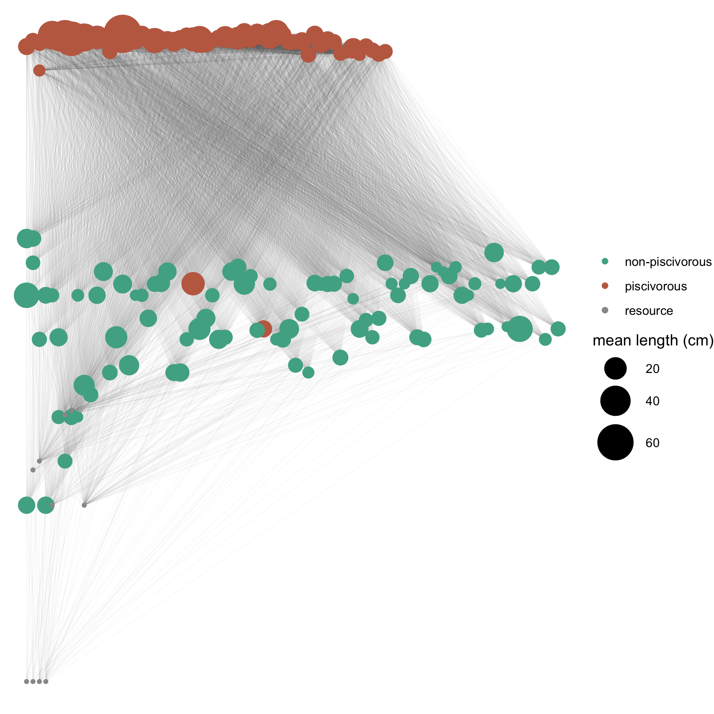
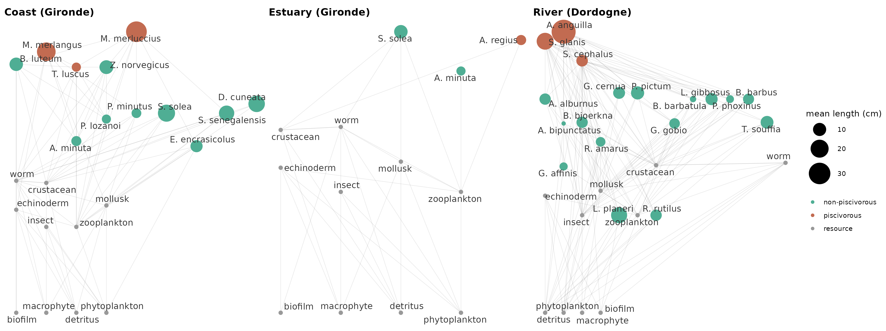
Methods – environmental pressures
- Nutrients: nitrate and phosphate
- River: AMOBIO
- Sea: REPHY, interpolated with
INLA(Lindgren and Rue 2015)
- Dam impact: mean dam height (AMOBIO)
- Downstream: linear, single path to the river mouth
- Upstream: dendritic, whole upstream network (heritage)
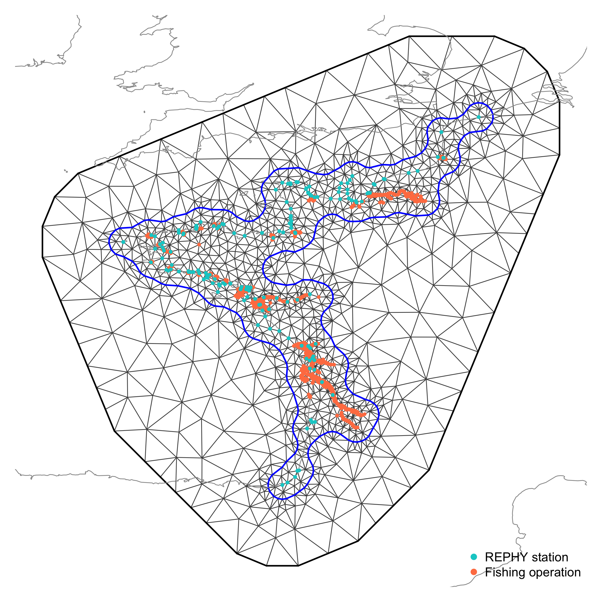
Warning
Work in progress: nutrient definitions are not yet fully consistent between AMOBIO and REPHY.
Methods – position along the continuum
- Distance to the nearest river mouth, computed for every fishing operation
- River: shortest path along the hydrographic network
- Sea: shortest path along a coastal mesh (
INLA) excluding land
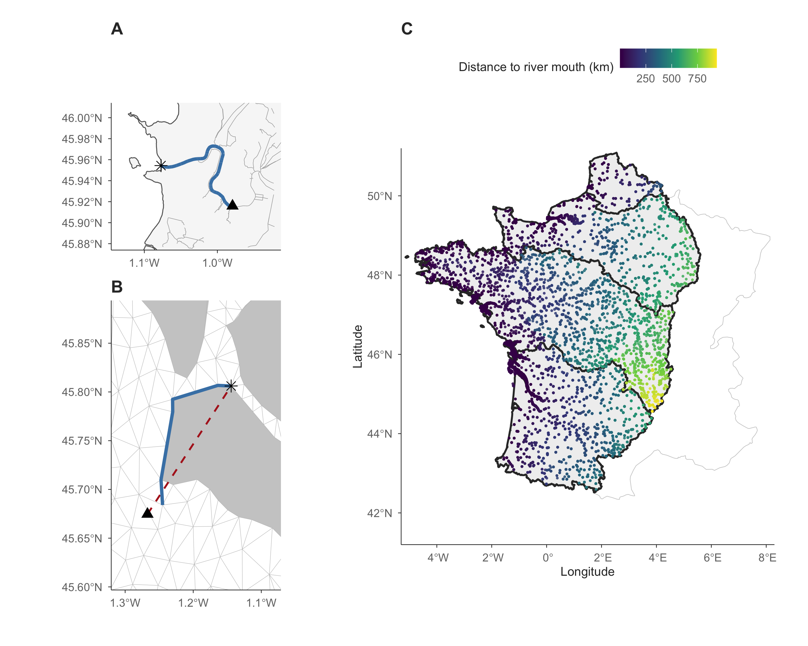
Note
We also added operation elevation and river width, when available.
Methods – statistical models
- Three Bayesian models (
R-INLA): S, C, TL - Testing the hypotheses
- H1: species richness included as a covariate for C and TL
- H2: quadratic terms for nitrate and phosphate
- H3: dam barrier effects interact with distance to mouth
- Controlling for bias
- Year and watershed random effects
- Spatial autocorrelation: Gaussian random field (SPDE)
Warning
Spatial autocorrelation uses euclidian and not hydrographic distance, for now.
Preliminary results – Case study on the river continuum
H1 - Testing richness mediated-effects
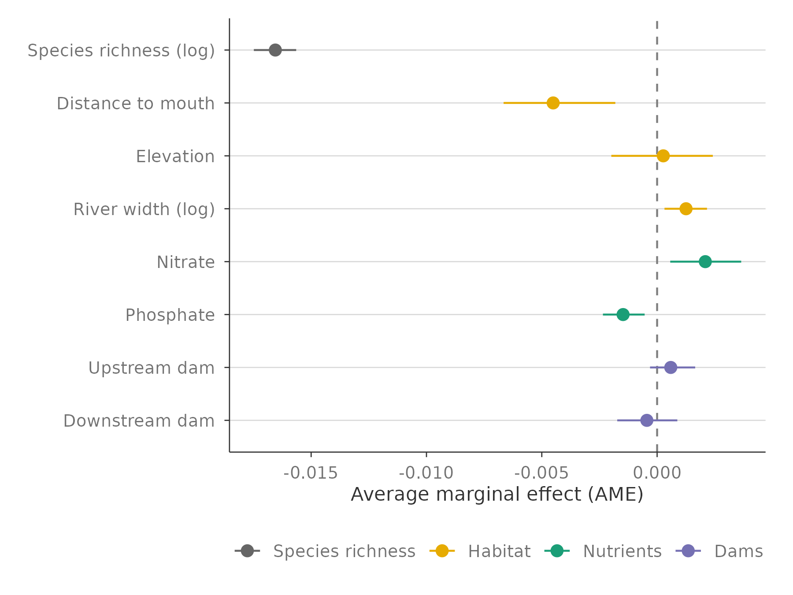
- Richness partly mediate stressor impact on structure (validates H1)
- Habitat variables strongly structure food webs
- Nutrients have opposite direct effects
- Dams have no average direct effects
H2 - Testing nonlinear nutrient effects
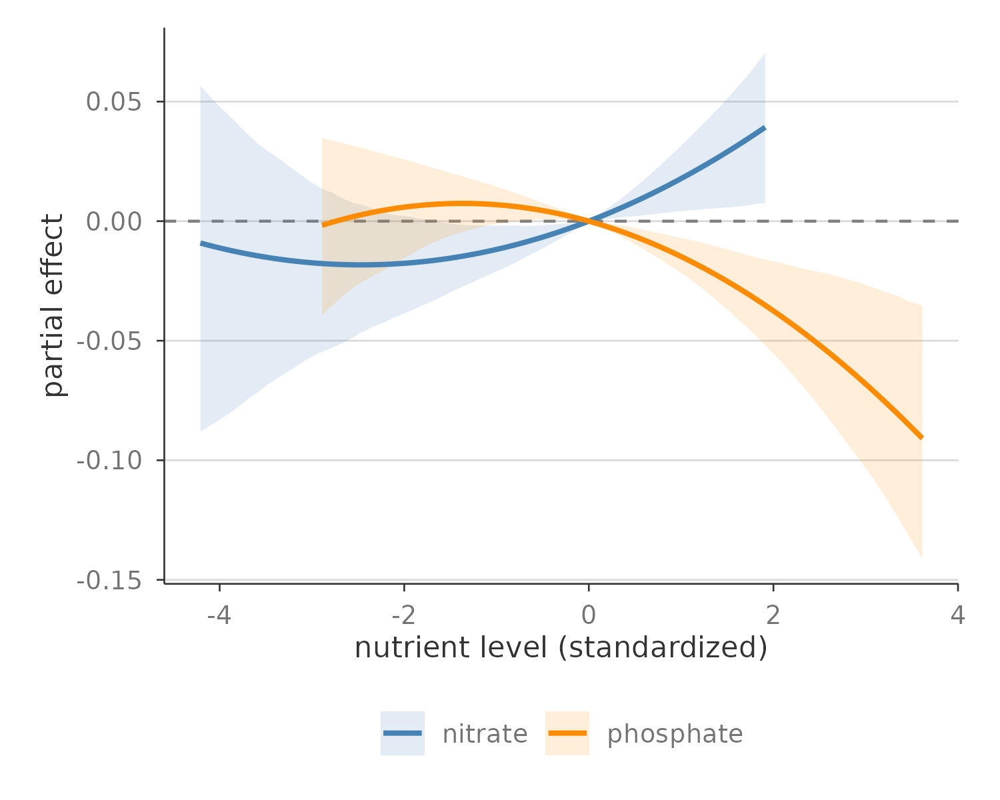
- Nitrate has an unimodal effect on richness (consistent with H2)
- At high concentration
- Nitrate increase is associated to more complex food webs
- Phosphate increase is associated to simpler food webs
H3 - Dam effects along the continuum
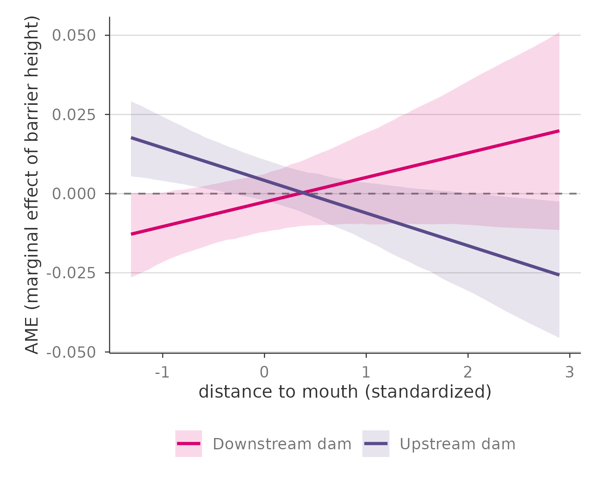
- Dam effect depends on position along the continuum, in particular for food web structure
- Close to river mouth
- Downstream dams are associated with simpler food webs
- Upstream dams are associated with more complex food webs
Perspectives
Next steps
- Finish harmonizing environmental data across the continuum
- Extend statistical modeling to the full river–sea continuum
Further investigations
- Model spatial autocorrelation as a Gaussian field on a graph (
MetricGraph), following hydrographic distance rather than Euclidean distance - Refine dam impact metrics beyond height (e.g. fish passability, using ROE / Naiades)
- Make nutrient inference consistent across river and coastal data (e.g. AMOBIO vs REPHY nitrite/nitrate definitions)
Thank you!
Thanks to Bastien Bourillon, Olivier Dézérald and Karl Kreutzenberger for their help with the AMOBIO dataset.
References